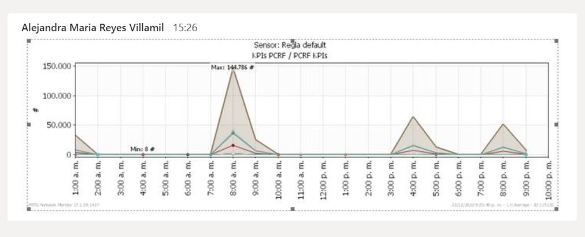

Análisis de infraestructura de Networking Nov 2020. Logicalis
Análisis gráfico logs en representación a escala
Logs equipos PCRF de 24 Dic 2020
Cisco Notes.
ASR01TRIM
OSPF Redistribution prefix limit has been reached syslogs
MPLS unnel-te flaps
ASR02TRIM
OSPF Redistribution prefix limit has been reached syslogs
ASR01MEG
You are running 4.3.4 which is not supported by CISCO anymore. Please upgrade this host.
Some interfaces flapping
LDP 2 Duplicate address(es) advertised by more than one peer
ASR02MEG
You are running 4.3.4 which is not supported by CISCO anymore. Please upgrade this host.
Some interfaces flapping
LDP 2 Duplicate address(es) advertised by more than one peer

Eventos 4 de Febrero 2021
Eventos a Febrero 11 de 2021. Hora de graficación, 14 horas
Eventos en ASR01MEG para los dias 10 y 11 de Febrero. Se observa cantidad de eventos cerca de las 9 PM del dia 10 de Febrero, lo cual no corresponden con el reporte de eventos en el servicio PCRF
Eventos en ASR01TRIM entre los dias 7 y 11 de Febrero. Se observa cantidad de eventos: PKT_INFRA-LINK-3-UPDOWN, ROUTING-OSPF-4-REDIST_MAX_PFX, L2-BFD-6-SESSION_STATE_UP, entre otros eventos
cerca del 10 de Febrero entre las 9 y 10 AM, deacuerdo al reporte del servicio con delay de PCRF
Eventos en ASR02MEG entre los dias 8 y 11 de Febrero. Se observa cantidad de eventos: PKT_INFRA-LINK-3-UPDOWN, ROUTING-LDP-5-SESSION_PROTECTION, L2-BM-6-MBR_BFD_STARTING, cerca de la hora reportada (9:30 y 10 am), y después del medio día
Eventos en ASR02TRIM entre los dias 9 y 11 de Febrero. Se observa cantidad de eventos: PKT_INFRA-LINK-3-UPDOWN, ROUTING-OSPF-5-ADJCHG, L2-BFD-6-SESSION_DAMPENING_OFF, L2-BM-6-ACTIVE, ROUTING-OSPF-4-REDIST_MAX_PFX, cerca de la hora reportada (9:30 y 10 am)y luego de las 3 de la tarde PKT_INFRA-LINEPROTO-5-UPDOWN